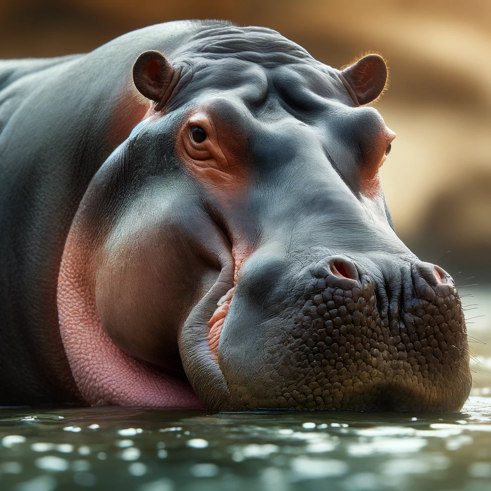

Introduction
The hippopotamus, also called hippo, is a large, mostly herbivorous mammal in sub-Saharan Africa.
Physical Characteristics
Hippopotamuses are known for their large size, barrel-shaped torsos, and wide-opening mouths. Despite their bulk, hippos are capable of running at speeds up to 30 km/h (19 mph) over short distances.